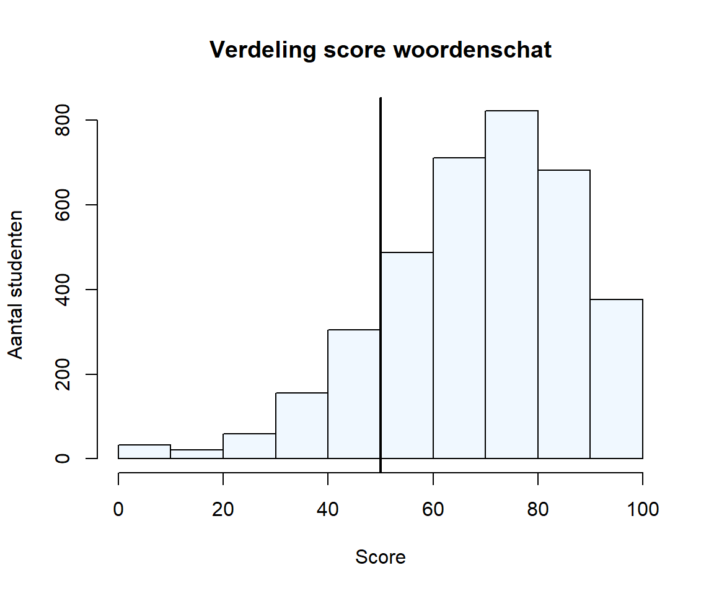
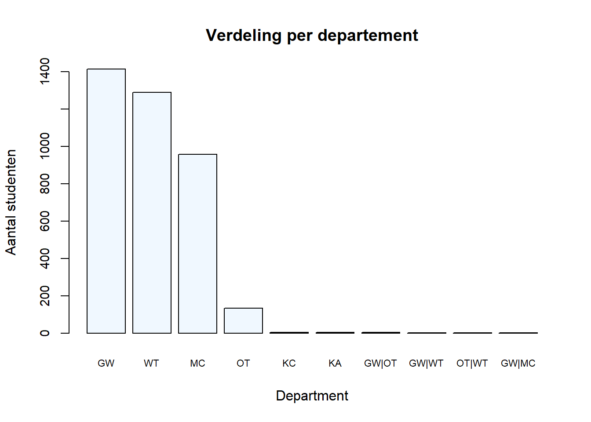
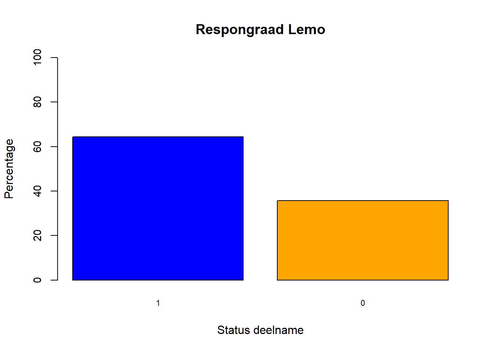

Workshop 1 Boxplot
1.1 Start
1.2 Nieuw project
Je kan ook zonder, maar het is beter om een project-folder te definiëren. Helemaal rechtsboven in RStudio, onder het kruisje om de applicatie te sluiten, vind je een keuzelijst met daarin de mogelijkheid om een nieuw project te creëren.
- Volg de wizard en maak een project aan in een folder naar keuze
Het is wel best om voor deze workshop lokaal te werken.
1.3 Nieuw rapport
We werken standaard met het principe van elektronische notitieboeken (eng: notebooks) om dat dit de reproduceerbaarheid verhoogt en gewoon ook veel plezieriger werkt. Het formaat daarvoor is een RMarkdown bestand. Maak een nieuw notitieboek aan via de eerste knop linksboven in de knoppenbalk: New File > R Markdown en dan een titel opgeven voor een HTML document aan te maken (HTML document is de standaard keuze). Het kan zijn dat RSTudio de eerste keer vraagt om een aantal pakketten te downloaden. Antwoord dan ‘ja’ en laat de installatie rustig voltooien.
Je merkt dat RStudio een voorbeeld bestandje heeft aangemaakt. Druk nu op de Save-knop of gebruik de sneltoets Ctrl + S om het bestand in de project-folder te bewaren (gebruik de sneltoets Alt + Shift + K voor een overzicht van andere sneltoetsen). Het bestand gaan we meteen eens uitvoeren of ‘knitten’ door op de knit-knop te drukken. Als alles goed gaat wordt er een voorbeeld rapportje gegenereerd en in de viewer-pane getoond.
1.4 Data opladen
TODO: Herkomst data
Er zijn in R meerdere manieren om data op laden. De eenvoudigste is om via de gebruikersinterface van RStudio te werken. Die doe je via Environment > Import Dataset > From Excel…. Het kan zijn dat RSTudio de eerste keer ook hier vraagt om een aantal pakketten te downloaden. Antwoord dan weerom ‘ja’ en de installatie rustig voltooien.
Open het Excel bestand dan je kan terugvinden op deze locatie:
https://github.com/ddhaese/Project_PHD_DAY/tree/main/datJe zal merken dat het in de R console de volgende code verschijnt, dit is de code die de Import Dataset wizard genereert zodat je de code laten kunt hergebruiken om bijv. in een automatisch script te verwerken:
library(readxl)
sem_1_anon <- read_excel("dat/sem_1_anon.xlsx")
View(sem_1_anon)De data wordt bewaard in het object sem_1_anon en als je gaat kijken onder de ‘Environment’ tab, zo je inderdaad dit object moeten zien staan. De laatste lijn opent de dataset meteen in de viewer van RStudio. Voor kleine en middelgrote datasets is dit een snelle manier om de data te exploreren. Merk op dat je in de viewer het data type kan achterhalen door met je muis over de naam van de variabele (= kolom) te hoveren. Je kan in de Environment-tab ook het object openklappen om die informatie te zien. Een derde manier om snel de inhoud van eender welk object in R te bekijken is met de str functie. Geef in de console de volgende code op en je zou een lange lijst moeten zien verschijnen met de variabele namen en geassocieerd data types, de lengte van de kolom en de eerste waarden. Je ziet ook dat het object van het type tibble is, een soort tabel afgeleid van een data.frame.
# In de console:
str(sem_1_anon)## tibble [3,811 x 71] (S3: tbl_df/tbl/data.frame)
## $ ID : num [1:3811] 1 2 3 4 5 6 7 8 9 10 ...
## $ Inschrijving : chr [1:3811] "Nee" "Nee" "Nee" "Nee" ...
## $ Generatiestudent : chr [1:3811] "Nee" "Nee" "Nee" "Nee" ...
## $ Departement : chr [1:3811] "MC" "MC" "MC" "MC" ...
## $ Opleiding : chr [1:3811] "Bachelor in het bedrijfsmanagement (rechtspraktijk)" "Bachelor in het office management" "Bachelor in het communicatiemanagement" "Bachelor in het office management" ...
## $ Opleidingstype : chr [1:3811] "Bachelor" "Bachelor" "Bachelor" "Bachelor" ...
## $ Woordenschat : num [1:3811] 70 65 60 60 45 70 55 50 65 95 ...
## $ Lidwoorden : num [1:3811] NA 80 76 62 66 NA 78 NA 92 82 ...
## $ Werkwoordspelling : num [1:3811] NA 73.3 60 73.3 73.3 ...
## $ Algemene_spelling : num [1:3811] NA 52.5 77.5 60 55 NA 65 NA 82.5 NA ...
## $ Woordvorming : num [1:3811] NA 34 36 50 14 NA 32 NA 28 46 ...
## $ Tekstanalyse : num [1:3811] NA 70 80 65 70 NA 65 NA NA NA ...
## $ Correcte_taal : num [1:3811] NA 60.9 69.6 78.3 65.2 ...
## $ Email : num [1:3811] NA 60 90 50 40 NA 30 NA NA NA ...
...In je nieuw Rmd bestand, verwijder je de voorbeeld code, i.e. alles vanaf ## R Markdown. Maak dan een nieuw titeltje aan ‘## TODO: TITEL WIJZIGEN’ met daarna een lege lijn. Druk dan op het icoontje om codeblok (eng: code chunk) in te voegen en kies in de keuzelijst voor R-code. Plak dan de gegenereerde code uit de console in deze codeblok zodat je de volgende twee blokken krijgt:
```{r setup, include=FALSE}
library(readxl)
``````{r load-data}
sem_1_anon <- read_excel("dat/sem_1_anon.xlsx")
View(sem_1_anon)
```1.5 Woordenschat
Elke rij in de dataset stelt een student voor en elke kolom een eigenschap die op die student van toepassing is. Laten we een aantal van die eigenschappen eens van naderbij onderzoeken. Het is tenslotte belangrijk om een beeld te vormen van de data. We beginnen met het laden van een aantal pakketten. Plak deze code na de vorige library-statement, zodat al de dependencies vooraf gekend zijn.
library(readxl)
library(data.table)
library(magrittr)
library(dplyr)Het opladen van de pakketten zal enkel functioneren als de pakketten ook op jouw pc zijn geïnstalleerd. Voer indien nodig de onderstaande code eenmalig uit in de console:
# In de console (enkel eenmalig bij eerste gebruik):
install.packages(c("data.table", "magrittr", "dplyr"))Nu kunnen we bijvoorbeeld de variabele woordenschat onderzoeken. We isoleren de variabele uit de sem_1_anon dataset en gebruiken een speciale operator teken van magrittr (%>%) om het resultaat door te geven aan de hist-functie (men spreekt van method chaining of piping). Daarna voegen we een lijn toe ter hoogte van de 50% om te accentueren dat de grote meerderheid van de studenten voor deze proef geslaagd was. De kleuren worden centraal beheert met de fucntie palette zodat we op één plek de kleuren van onze plots kunnen wijzigen. Dus, col = 1 betekent aliceblue en col = 2 staat voor black.
palette(c("aliceblue", "black"))
sem_1_anon$Woordenschat %>%
hist(main = "Verdeling score woordenschat",
xlab = "Score", ylab = "Aantal studenten",
col = 1)
abline(v = 50, lwd = 2, col = 2)
1.6 Departement
Laten we nu eens onderzoeken welke departementen vertegenwoordigd zijn in de gegevensset.
sem_1_anon$Departement %>%
table %>%
sort %>%
rev %>%
barplot(main = "Verdeling per departement",
xlab = "Department", ylab = "Aantal studenten",
cex.names = .7, cex.axis = .9, col = 1)
We zien dat een aantal departementen amper vertegenwoordigd zijn. Die laten we eruit. In de eerste lijn zetten we het tibble object om naar een data.table object d.m.v. de setDT functie. Daarna tellen we het aantal studenten (met speciale functie .N) per departement, selecteren we de departementen waarvoor méér dan 5 studenten antwoorden en bewaren we het resultaat in het object dep_top.
sem_1_anon <- setDT(sem_1_anon)
dep_top <- sem_1_anon[, .N, Departement][N > 5, Departement]
dep_top## [1] "MC" "WT" "GW" "OT"1.7 De boxplot
We kennen de globale verdeling van de scores voor woordenschat en we weten welke van de 4 departmenten we willen bestuderen. Nu kunnen we een boxplot uittekenen:
sem_1_anon %>%
filter(Departement %in% dep_top) %>%
boxplot(Woordenschat ~ Departement, data = .,
col = 1, pch = 19, cex = .5,
main = "Verdeling score woordenschat per departement")
abline(h = 50, lwd = 2, col = 2)